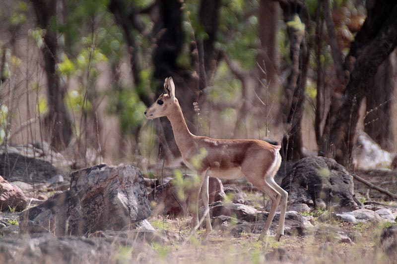
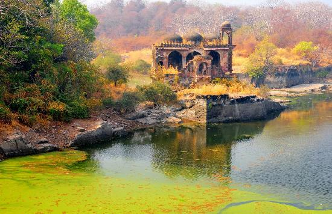
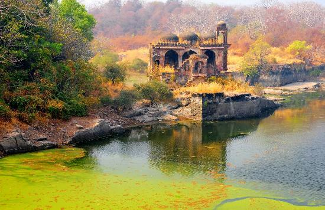
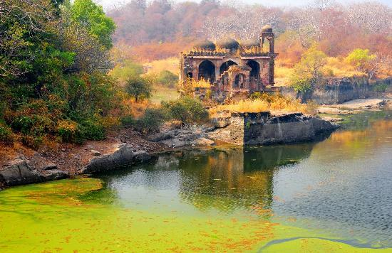

The Desert National Park displays the best of the Thar desert’s ecosystem and its varied wildlife. The Park is formed of undulating sand dunes, jagged rocks, dense salt lake bottoms and inter-medial areas. Various species of animals such as black buck, chinkara and desert fox inhabit the Park. The highly endangered Great Indian Bustard, one of the world's heaviest flying birds, can also be seen here. In winter, the park hosts an incredible variety of migratory raptors such Himalayan and Eurasian Griffon Vultures, Eastern Imperial Eagle, and the Saker Falcon.
BAND BARETHA
Band Baretha is an old wildlife reserve of the rulers of Bharatpur, currently under the administration of the Forest Department. The construction of the dam on Kakund River was started by Maharaj Jaswant Singh in 1866 AD and completed by Maharaj Ram Singh in 1897 AD. The palace inside the reserve was built by Maharaj Kishan Singh and is the private property of the Bharatpur royal family. Band Baretha is a bird watcher’s paradise because of over 200 species of birds, including the elusive Black Bittern.
GAJNER WILDLIFE SANCTUARY
Barely 32 kilometres from Bikaner, on the Jaisalmer road, is a lush green forest which is a haven to the nilgai, chinkara, black buck, wild boar, flocks of imperial sand grouse and many other species of migratory birds that make the sprawling forest their winter home.

KEOLADEO GHANA NATIONAL PARK
Every year, thousands of migratory waterfowl birds such as green sandpiper and cranes visit the park during winter. It was created in mid 18th century as a small reservoir located 5 kilometres to the southeast of Bharatpur. The construction of the Ajan Bund (dam) and the subsequent flooding of this natural depression led to one of the world’s most fascinating and spectacular bird reserves. The Keoladeo Ghana National Park is considered to be one of the richest bird areas in the world today.
MUKUNDARA TIGER RESERVE
The Mukundara Tiger Reserve is 50 kilometres from Kota. Tigers are often relocated here from Ranthambore Reserve. It has a core area of 417 square kilometres and a buffer zone covering 342.82 square kilometres. Other wildlife includes panther, deer, wild boar and bear. This thickly wooded area is home to a large variety of birds as well.
RAMGARH VISHDHARI SANCTUARY
Ramgarh Vishdhari Wildlife Sanctuary is located 45 kilometres from Bundi on the Bundi-Nainwa road. Covering an area of 252 sq. km., this sanctuary is home to a variety of flora and fauna. Established in 1982, it forms a buffer for Ranthambore National Park. The best time to visit is between September and May.
RANTHAMBORE
Situated 14 km from Sawai Madhopur, the Ranthambore Park gets its name from the Ranthambore Fort situated within its boundaries. The National Park, situated amidst the Aravalis and Vindhya ranges is spreads over an area of 392 sq.km of thick forest punctuated with pleasant waterfalls. It is home to the elusive tiger, other animals found here include chinkara, sambhar, cheetal and over 300 species of birds.

SARISKA TIGER RESERVE
Sariska Tiger Reserve is a national park where you will find a perfect intermingling of nature. It contains mountains, grasslands, dry deciduous forests and cliffs which span over 800 square kilometres. Situated in Alwar, the Tiger Reserve is nestled in the lap of Aravali hills. Currently home to numerous animals apart from tigers, the reserve showcases nature in its best form. Animals like jungle cats, rhesus macaque, sambhar, chital, wild boar, etc., are found here. Not only animals, you get to see a number of bird species, such as sand grouse, harbor quails, crested serpent eagles, etc. here as well. If you are planning a visit, here’s what you can do when you are here


.jpg)
.jpg)


.jpg)

.jpg)

.jpg)
.jpg)
.jpg) 


.jpg)
.jpg)